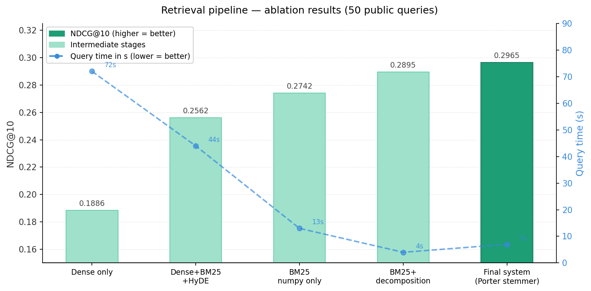

A hybrid information-retrieval system that answers natural-language queries over a synthetic Wikipedia-style corpus of 437,108 chunks — built around a fast NumPy-CSR BM25 core with query decomposition, Porter stemming and weighted RRF fusion.
The task: given a query, return the top-10 page IDs from the corpus, scored by NDCG@10, under a strict ≤60 s autograder budget. The repo has two sections:
A dynamic dense vector index from scratch (vector_index.py): dot-product similarity on L2-normalized vectors, with insert / delete / search each constrained to ≤20 physical lines. Uses a growable NumPy matrix + id→position map, swap-fill deletion, and argpartition top-k.
The full retrieval system (this artifact's focus): offline chunking + embedding + indexing, then an online BM25 retriever with query decomposition, decade expansion, stemming and RRF page aggregation.
The corpus is synthetic / fictional — entities like "Ulric Isenmar" or "winter cup finals" don't exist in MiniLM's pretraining, so dense semantic retrieval has little to grab onto. Exact lexical matching (BM25) shares vocabulary with the corpus even under paraphrase and decisively outperforms dense retrieval (29/50 vs 16/50 hits). The team's headline result is that dense retrieval actively hurt the score when fused, so the final system is BM25-only.
BM25 scores are precomputed at index time and stored as a NumPy CSR sparse matrix (data / indices / indptr). A query becomes a handful of array-slice-and-sum operations over matched term rows — no Python loops over the 437k chunks — giving roughly a 10× speedup over dict-based BM25.
Click a stage to see what it does. Offline stages build the artifacts once; online stages run per query inside the autograder.
Select a stage above to read the details grounded in the repo source.
Type a query (or pick an example) to see exactly how retrieve.py processes it: multi-hop decomposition, decade expansion, and the pure-Python Porter stemmer. (Runs the repo's real rules in JS — no scoring, since the 437k-chunk index isn't shipped here.)
blue decade-expanded year teal Porter-stemmed (root + original both kept)
The real chart committed to the repo (ablation_chart.png). NDCG@10 climbs left→right while query time collapses from 72 s to 7 s.

| System | NDCG@10 | Query time | Notes |
|---|---|---|---|
| Dense only (FAISS) | 0.1886 | 72 s | Baseline |
| Dense + BM25 + HyDE (RRF) | 0.2562 | 44 s | Original hybrid |
| BM25 numpy only | 0.2742 | 13 s | Sparse dominates |
| BM25 + query decomposition | 0.2895 | 4 s | +4pp from decomposition |
| BM25 CSR + Porter + decomp | 0.2965 | 7 s | Final system |
Multi-hop queries like "What links X, Y and Z?" have one relevant page per entity. Searching the full query penalizes each page for not mentioning the others. Splitting into sub-queries [X, Y, Z], searching each independently and fusing with RRF lets every relevant page win on its own sub-query.
Real excerpts from the repo. The retriever's entire scoring path is NumPy-vectorized.
# Fast BM25 query using numpy CSR operations — no Python loops over chunks. scores = np.zeros(N, dtype=np.float32) seen = set() for token in tokens: if token not in vocab or token in seen: continue seen.add(token) row = vocab[token] start, end = int(indptr[row]), int(indptr[row + 1]) if end > start: scores[indices[start:end]] += data[start:end] # slice + sum top_k = np.argpartition(scores, -k)[-k:] # O(n) top-k top_k = top_k[np.argsort(scores[top_k])[::-1]]
def _to_pages(chunk_scores): page_scores = defaultdict(float) for cid, score in chunk_scores.items(): m = meta[cid] boosted = score * (1.5 if m["chunk_type"] == "summary" else 1.0) pid = int(m["page_id"]) if boosted > page_scores[pid]: # max-pool over chunks page_scores[pid] = boosted return sorted(page_scores.items(), key=lambda x: x[1], reverse=True)
Grounded in: ProjectA_PartB/{retrieve,index,chunk,embed,main}.py, README.md, ablation_chart.png, artifacts/bm25_stats.json (N=437108), and ProjectA_PartA/vector_index.py.